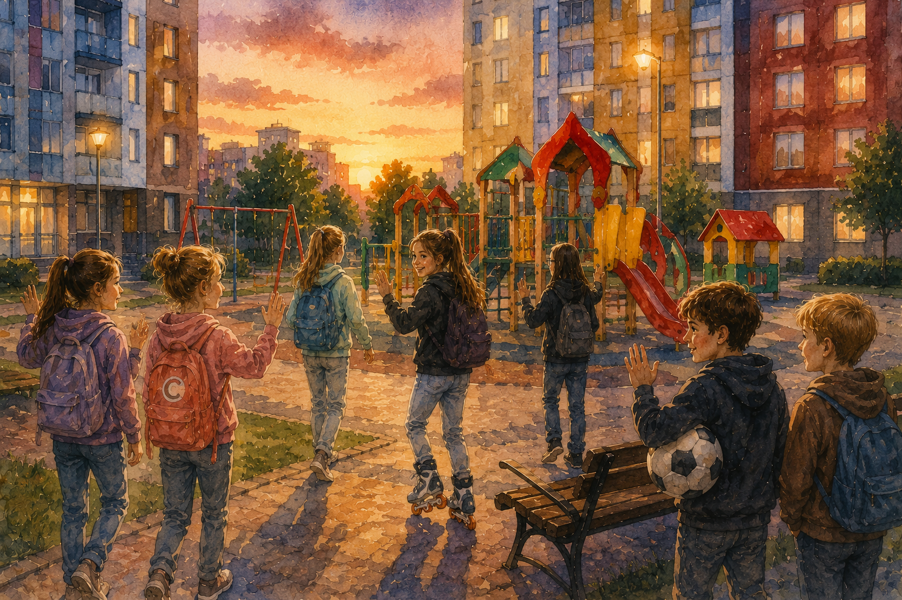
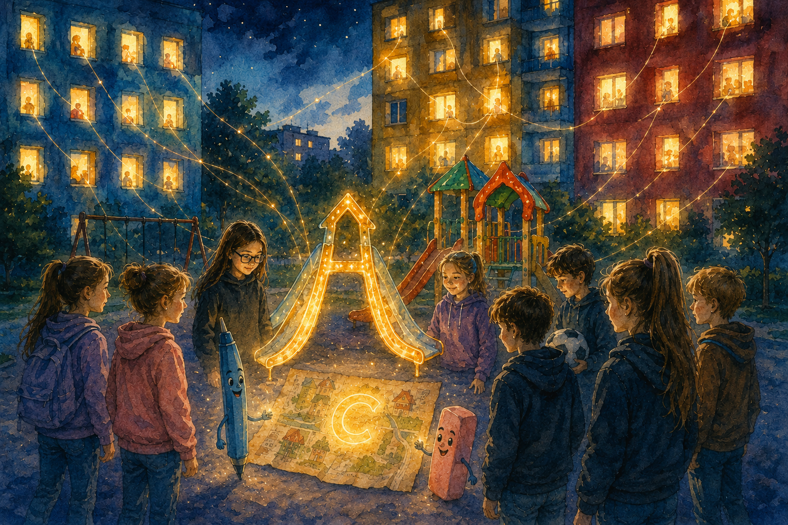

Приключения Истины в Нижнем Новгороде
Глава 14. Сон
Вечер пришёл во двор не сразу. Сначала он лёг тенью под лавку у красного дома, потом забрался на горки, затем тихо погасил блеск на качелях. Детская площадка опустела, будто кто-то невидимый сказал: «Съёмка окончена, продолжение завтра».

— Мне пора, — сказала Саша и посмотрела на жёлтый дом. — А то сейчас начнётся: где ты, почему не ешь, почему вся в пыли.
— У меня так же, — сказала Вика. — Только без пыли. Наверное.
Полина пошла к голубому дому. Катя ещё раз прокатилась на роликах по кругу и притормозила так резко, что все посмотрели на неё.
— Что? — спросила Катя. — Я красиво ушла.
Оливия засмеялась и сказала, что это был почти как финал фильма. Ручка с Ластиком направились к красному дому, переговариваясь так важно, будто у них в подъезде заседание секретного штаба. Лёва делал вид, что ему вообще всё равно, но всё-таки спросил у Яши, не оставит ли тот мяч во дворе до завтра. Яша прижал мяч к себе.
— После сегодняшнего? Нет уж.
Истина задержалась у площадки. Ворота, горки, лавка, три высоких дома — всё было обычным. Но карта в её кармане была тёплой.
— До завтра, — сказала она двору и полша к подъезду.
Кодовый замок пискнул. Дверь закрылась.
Ночью Истине приснилось, что она стоит во дворе. Только двор был не тёмный, а синий, как экран телефона перед сном. В окнах красного, жёлтого и голубого домов горели маленькие огоньки. Каждый огонёк был чьим-то сном.
Сначала Истина подумала, что она одна. Потом из голубого света вышла Полина, из жёлтого — Саша и Вика, с другой стороны показались Катя и Оливия. Лёва стоял у лавки с Яшиным мячом и возмущённо шептал:
— Это не я придумал. Я вообще спал.
Посреди площадки лежала карта. На ней светилась буква С, найденная раньше. А рядом вдруг поднялись две горки, как два плеча, и между ними протянулась светлая дорожка. Получилась большая буква М.

Она не кричала и не мигала. Она просто стояла во сне, будто ждала, когда все её заметят.
— Сначала С, теперь М, — тихо сказала Истина.
И тут с качелей донёсся смешок. Не чей-то один. Общий. И сон погас как мотылек в утренней траве.
Утром каждому из них казалось, что сон был только его. Но карта в кармане Истины стала теплее ровно на одну букву.